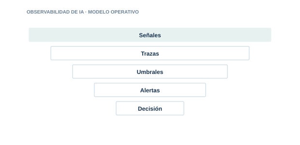

09 · PILAR
Observabilidad de IA
Entender qué hace el sistema, por qué falla y cuándo intervenir.

Directorio del pilar6 guías · acceso directo
09.0109.0209.0309.0409.0509.06
Observabilidad LLM
Registra solicitudes. respuestas. consumo. latencia y errores con privacidad.
Observabilidad RAG
Mide retrieval. fuentes. calidad del contexto y groundedness.
Observabilidad de agentes
Traza decisiones. acciones. tools. memoria. delegaciones y bucles.
Observabilidad de seguridad
Detecta inyección. jailbreak. abuso. exfiltración y comportamientos anómalos.
Métricas y SLO
Define objetivos equilibrados de calidad. seguridad. coste y disponibilidad.
Integración SIEM
Normaliza eventos de IA y crea casos de uso accionables para el SOC.
01
SeñalesControl y evidencia aplicable
02
TrazasControl y evidencia aplicable
03
UmbralesControl y evidencia aplicable
04
AlertasControl y evidencia aplicable
05
DecisiónControl y evidencia aplicable
Cada guía incluye explicación, implantación, controles, evidencias, errores habituales, métricas y referencias.